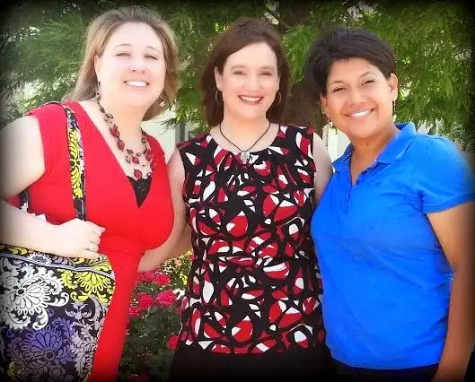

Before I say anything else, please do me the honor of going here and registering for a webcast set for Monday night to learn the inside scoop on our book, “Redeemed by Grace.” It’s super easy to sign up. Your name and email is pretty much all we’ll need. And then, you just set your alarm for the right time on Monday evening, log into your computer and the webcast page, and you will have a privileged peek at a story that, we believe, is going to bless many people.
Did you sign up? Not yet? I can wait, really……(pause)…..okay, you done now? Great!
Here’s who you’ll be hearing from Monday night, Feb. 16. (You can click the photo to get a closer look.) Cool huh? Yeah, I’m in there somewhere, too.
{kind=link}
Whew, it’s hard to believe this time has finally come. After hundreds of texts, emails, and phone calls, late-night deliberations, and hushed celebrations, the week of our book’s release has finally arrived!
There was good reason we stayed quiet about it for a long while. A dear writer friend gave me that advice years ago and it seemed so very astute. “Protect your writing in its early stages,” she’d said. And so we did. We didn’t want anything to infiltrate the writing process, nor to sway us in another direction than the one that seemed to be the whispered answers to our prayers.
We were focused on telling a story — a beautiful story in my opinion (and not because I wrote the book but because of the main character, the author). We knew the story had the potential to make a tremendous impact. And we entrusted God with it all — even before securing a publisher. We just rolled up our sleeves and got to work.
Some of my closest friends didn’t even know I was working on this project, nor that I flew to Texas on several different occasions to meet with Ramona Trevino, whose story I tell through a several-year-long collaboration. Our visits were largely organized by our mutual friend, Lauren Muzyka, who was one of the first to stand by Ramona during her transition from a worldly focus to one intent on the ultimate pursuit of heaven.
 |
| Lauren Muzyka, Me and Ramona Trevino, near Dallas, TX, June 2013 |
{kind=link}
But at some point, the time for something like this just becomes right, or ripe. The baby needs to be born. Literally, because Ramona is currently nine months pregnant, and her real baby will be born any day now. And figuratively in the form of this “book baby” that’s about to be birthed. You might consider me Ramona’s mid-wife in the journey.
Having waited so long, and summoned all the patience we could muster, we wanted something really special to launch this baby into the world. Our prayers were answered again in the form of a handful of prominent pro-life warriors stepping up to join us for the above-mentioned, one-time, exclusive webcast. The purpose? To give those interested a chance to meet the good souls who played a part in Ramona’s conversion, and in the book coming to be. And also, I want to be upfront here, to bring some of the darkness of the abortion industry into the light. We feel that’s a worthy goal outside of the beautiful story of a soul; a soul who was willing to be vulnerable in order to reach your heart!
We would be tickled if you’d join us Monday night. You’ll be muted, so all you have to do is listen, and maybe wash the dishes, floss your teeth, or whatever else needs doing during our bantering. Just stay close to your computer to hear our sharing. I think you’ll be glad you did. And please tell anyone and everyone you think might be interested! The more the merrier.
Oh, you forgot the webcast link to register? Here it is again! Honestly, it will take three minutes of your time. Totally slick and user-friendly.
Looking forward to sharing with you on Monday, the eve of the official book launch!
Q4U: Just one question today. Will you be on the webcast Monday? “Yes” is the right answer to this one! 🙂